Semester 3 · Jury
Rushabh
Mahore
Interaction Design · NID Bengaluru
Why do we fear what we don't understand?The Fear Between Us
How do children meet history?Time Wanderers
How do you prepare for a place you've never been?Saath
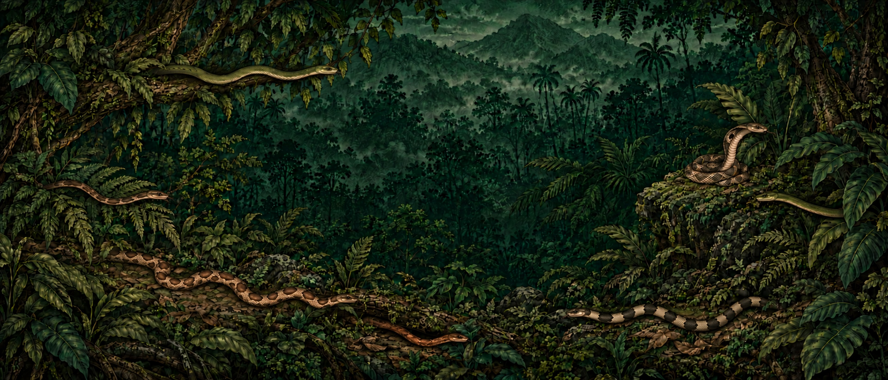
Data storytelling · Interactive scroll story
The Fear Between Us
Understanding beyond fear.
A story told through data, and the lives it leaves uncounted.
India is the snakebite capital of the world.
The crisis is not the venom alone. It is the fear that surrounds it.
of the world's snakebite deaths happen in India.
lives lost, every hour
Every hour, in India, on average.
Snakebites kill more people here than almost any natural disaster, and stay largely invisible.
We count the lives lost to snakebite.
But who counts the snakes killed out of fear?
UNREPORTED · UNCOUNTED · UNSEEN
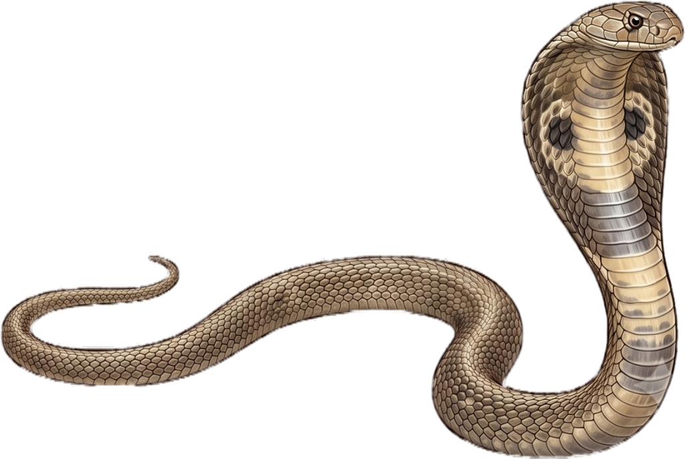

Problem
The crisis is not the venom alone. It is the fear around it.
Panic and myths
delay the one thing that works: timely antivenom.
Killed on sight
snakes are killed out of fear, and nobody counts them.
One shared home
where habitats overlap, fear turns an encounter into conflict.
Intent: replace fear with understanding. Show the scale honestly, then show the other side.
Process
A story that turns halfway.
Nine scroll chapters, written to move the reader from fear to understanding.
Data
iNaturalist open data: 33,408 sightings across 307 species · published venom figures (LD₅₀, yield)
Beyond the fear
One country. A spectrum of snakes.
Each dot is one species, from a 307-species breakdown.
23.8% venomous
18.6% mildly venomous
57.7% non-venomous
Around 75% are harmless to a human being.
Outcome · Deadliest Draw
Which snakes cause most deaths? Meet the Big Four.
Outcome · Explore the observations
Who shares your neighbourhood?
Search your area to see the species recorded within 5 km. Records show past sightings, not real-time presence.
33,408
recorded observations · 307 taxa
Tools
Learnings
Numbers need a human scale: “every hour” lands harder than a yearly total.
Interaction turns a fact into a discovery: drawing a card beats reading a table.
Local data makes a national problem personal.

Less fear. More understanding. Room for both.

Multimodal Interactions · with Sharvani & Ankit · guided by Prof. Mamata Rao & Prof. Athul Dinesh
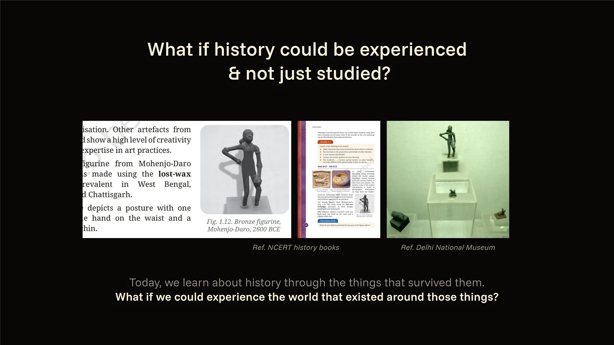
Problem
Children meet history as isolated facts.
They learn what an object is, but not who made it, how they lived, or how it connects to today.
The gap is not information.
The gap is context.
What research says
Curiosity grows through active observation and questioning.
Deeper thinking comes from conversation during the experience.
Memory is stronger when curiosity is higher.
Exploration, excitement and discussion support learning in museums.
What children told us
How might we
make learning about civilisations and artifacts more immersive, engaging and contextual for children?
Without replacing the teacher, the history or the museum. Instead, add an experiential layer.
Time Wanderers
Discover the object. Travel through its history.

Storyboard


Clench to choose · hands apart to zoom · walk to explore · blow to uncover · roll back in time · ask with a mic gesture.
Prototype demo
Touchless gesture sensing, clench selection, spatial zoom, artifact interaction and real-time narrative.


Visual system & tools
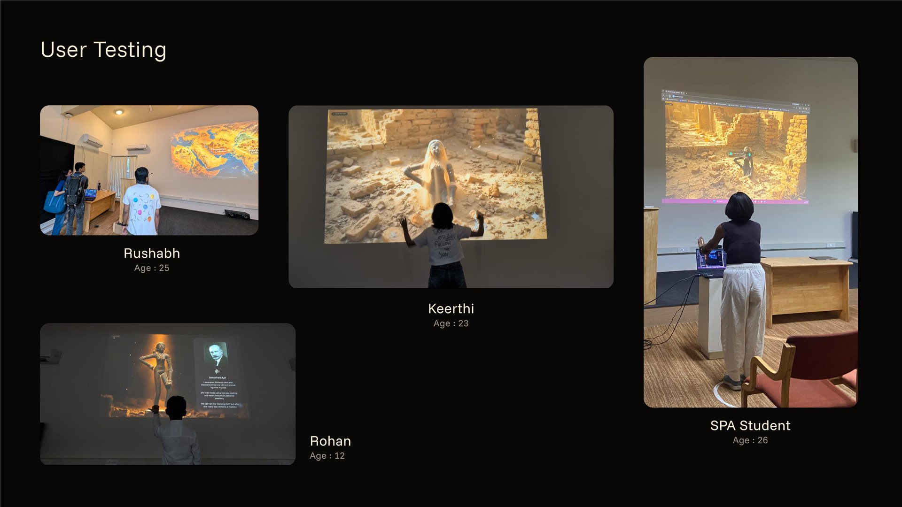
Learnings
From mockups to code. We built the flow in VS Code by layering assets, video, audio and interaction.
Natural beats clever. Testing taught us to strip complex inputs back to everyday movements with clear signifiers.
Roles and decisions. Splitting asset creation, flow design and assembly kept a tight timeline; decisions stayed collective.
“Every artifact holds a narrative. Connecting people to those hidden stories turns a museum visit into something special.”
Design Project 2 · Mixed reality · Accessibility
Saath
Practise the airport, before the airport.
Platform
Meta Quest 3 (WebXR) + desktop preview
Journey
11 practice scenes, home to seat 14A
Solo project


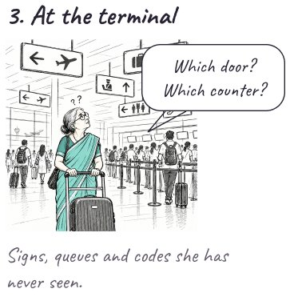
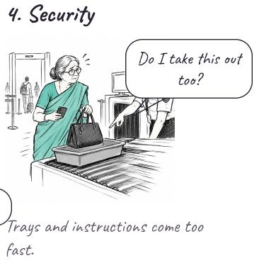
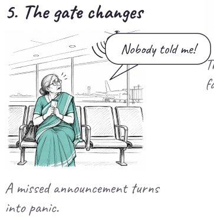

Kamala, 68, flying alone for the first time.
Every unknown step pushes her back towards needing someone with her.
Systems thinking
Three vicious loops
Stress — not knowing what comes next makes every step stressful.
Dependence — asking for help feels like a burden, so they depend on family.
Avoidance — without practice, one bad trip confirms flying is not for them.

Beneath the surface
What we see at the airport, and what sits underneath.
Events → patterns → system structures → mental models: “If I get it wrong, I hold everyone up.”

Where a small change can break the loops

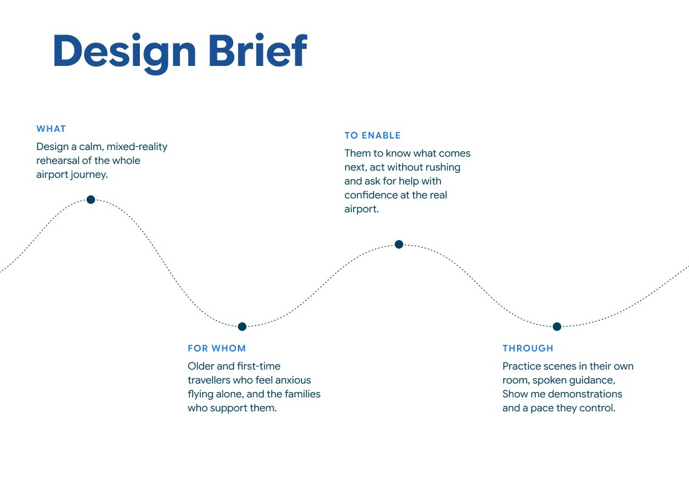

5 conversations → 3 gaps
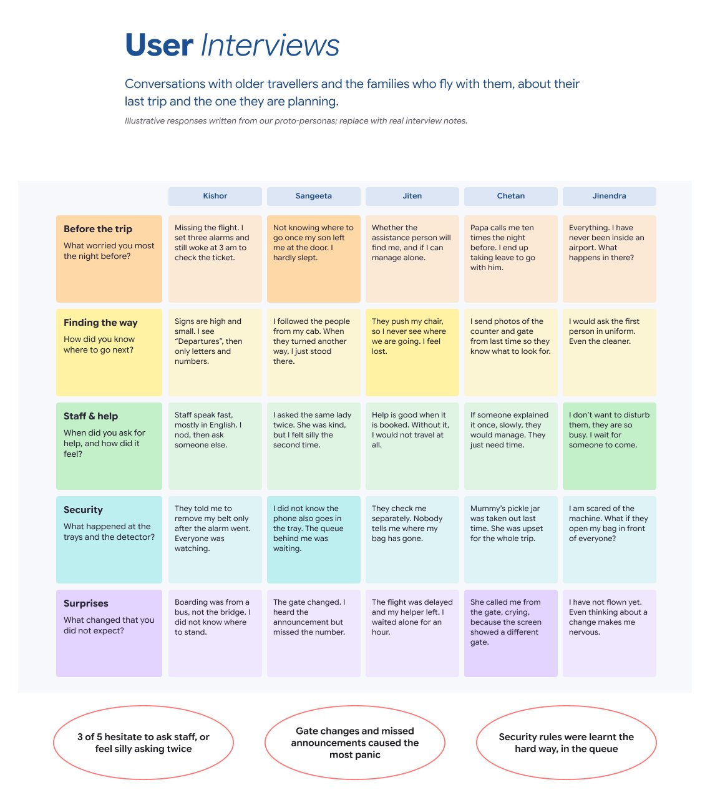
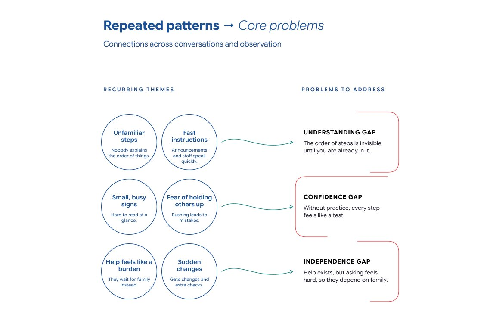

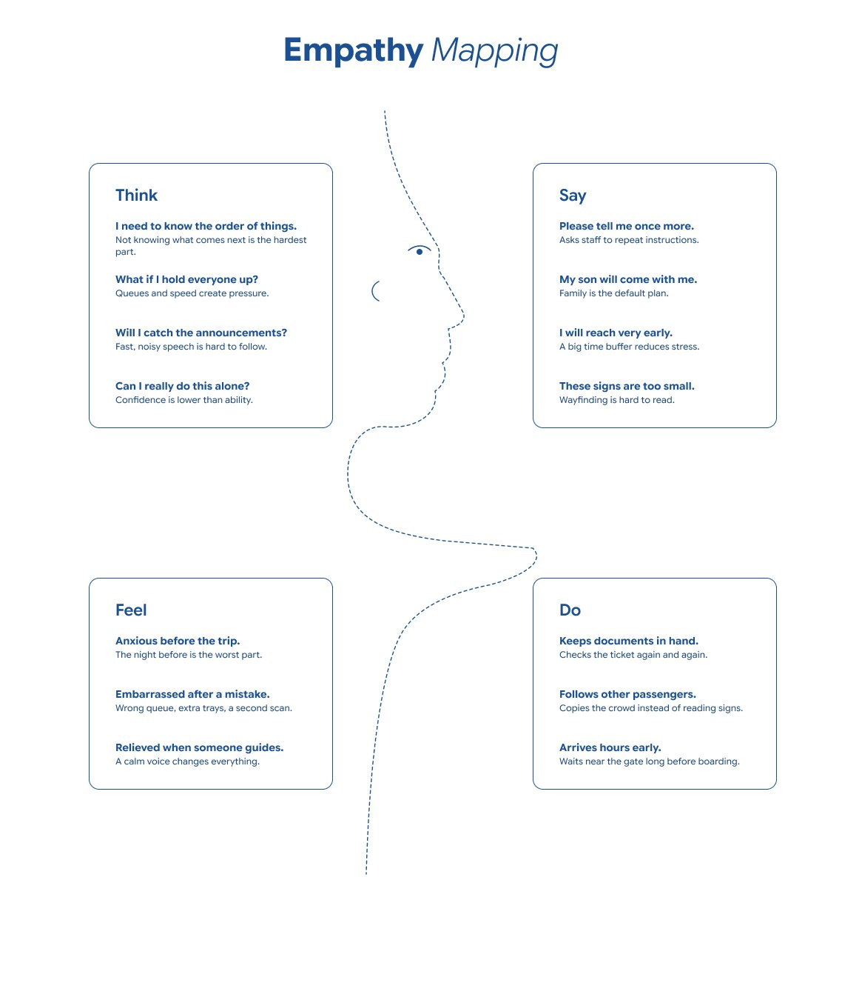
Patterns → possibilities
Every problem gets an answer inside Saath.
One step, one card, one action · no timers · a calm voice, repeat any time · gentle retry, never a failure screen · Show me and Ask for help on every step.
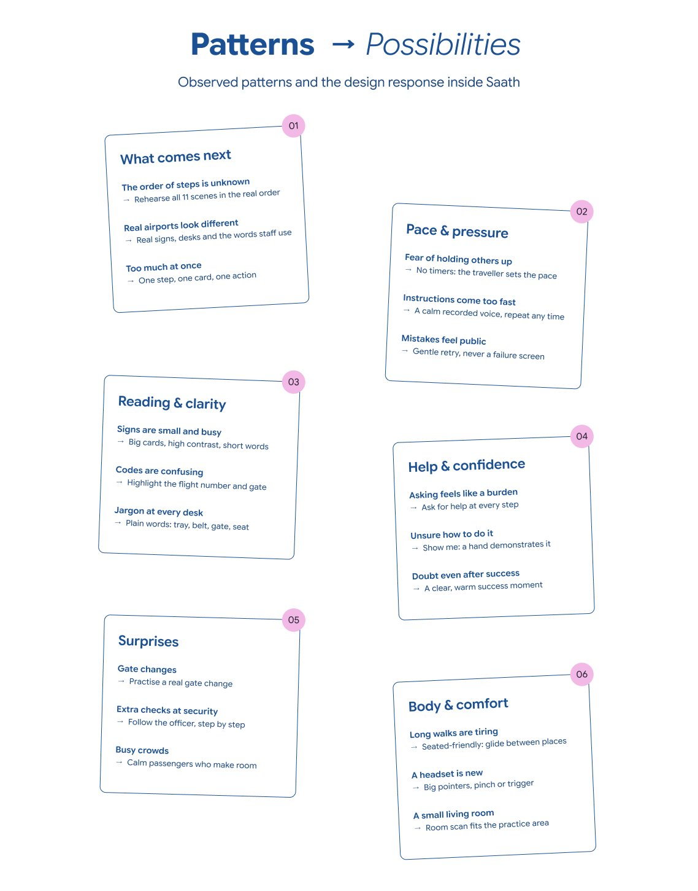
Information architecture
One path, in the same order as a real airport.
Available on every step: Show me · Ask for help · Read aloud
The start screen
One screen, no scrolling.
Your name — printed on the booking, pass and ID; greeted aloud.
Start in mixed reality — the main path, in your own room.
Full VR · Webcam · Desktop preview — when the room is small, or there's no headset.
Watch the journey — a narrated tour of all eleven scenes.

At home
Prepare at home, in your own room.


Read your booking on a familiar phone
Pack by dragging, with the limits in view
Getting there
Arrive, the way you will on the day.
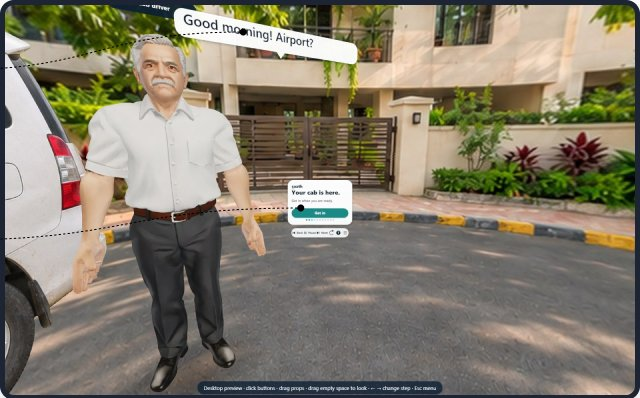


The cab driver greets you
Step out at Terminal 2
Ticket and ID at the door
Terminal
Check-in and security, without the rush.

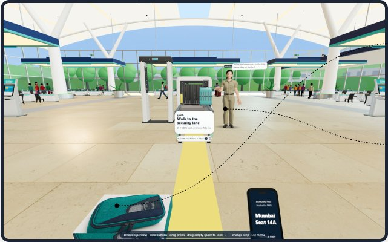
Follow the yellow line to check-in
The security lane, in the real order
Gate & aircraft
Find the gate, even when it changes.
The board shows gate 18; the pass still says 12. Trust the screen, follow the signs, then down the jet bridge to seat 14A.
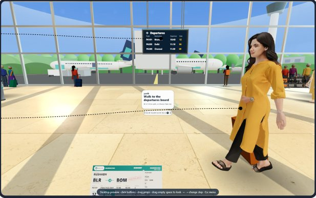


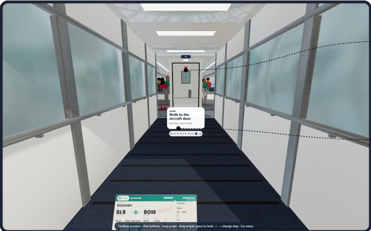
Departures board · gate change · boarding · jet bridge to 14A
Built with
three.js + WebXR — runs in the Meta Quest 3 browser
Blender — the airport spaces and props
Figma — research boards, IA and screen flows
Recorded voice guidance — calm narration, repeat any time
Desktop & webcam preview — try it without a headset
Learnings
Design for confidence, not only for ease.
Mapping the loops showed the real problem was confidence, not information.
For older users, pace matters most: removing timers did more than any visual change.
Mistakes must stay private. A gentle retry keeps people practising.
Map the system. Then build it to learn.
Fear → understanding
The Fear Between Us
Object → world
Time Wanderers
Anxiety → confidence
Saath
Thank you.